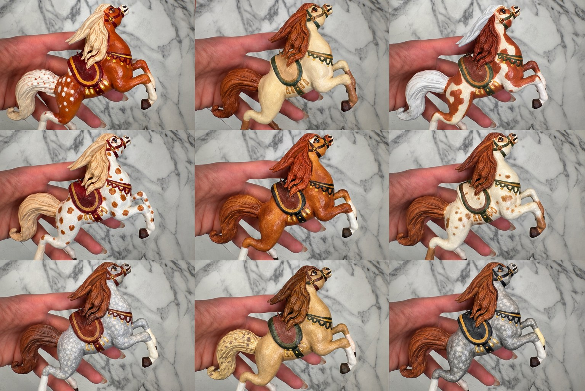

Следы руки
Рождение Жителя
Страница о пути от первого образа до росписи, упаковки и встречи с Хранителем.

1. Искра
Сначала появляется не форма, а ощущение: характер, взгляд, маленький фрагмент сказки. Образ ещё не имеет имени, но уже требует быть созданным.
2. Форма
Работа идёт руками — постепенно проявляются пластика, жест, детали и выражение лица. След ручного труда не скрывается: именно он делает Жителя живым.

3. Характер через цвет
Роспись меняет настроение даже у родственных фигур. Поэтому каждый Житель Рода сохраняет индивидуальность, несмотря на общую форму.
4. Путь к Хранителю
После завершения Житель получает свою историю и отправляется в новый дом. Упаковка должна защищать работу и одновременно продолжать атмосферу Мастерской.